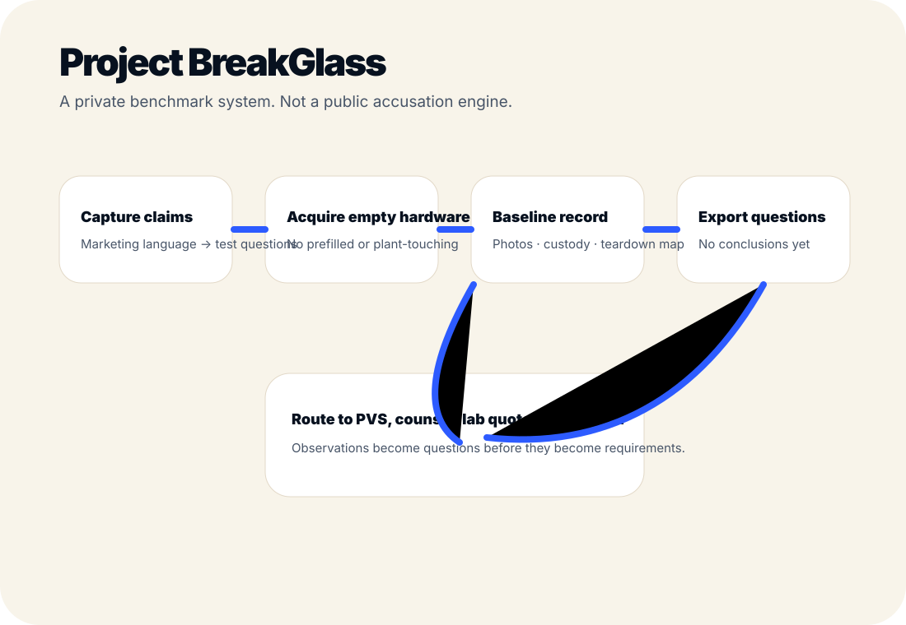

Internal benchmark program
Project BreakGlass turns claims into questions.
Project BreakGlass is the internal hardware benchmark system for capturing supplier claims, creating baseline records, and routing observations into PVS, lab, counsel, and QuartzPath requirements.
Not a public accusation engine.
Public supplier claims are test-question generators, not Proof Labs claims. Observations become questions. Questions become requirements only after enough evidence, counsel, and testing support them.
- Empty, unused hardware only at first.
- Custody, photos, component map, and unknowns.
- No prefilled hardware. No plant-touching.
- No public competitor claims before data and counsel.
